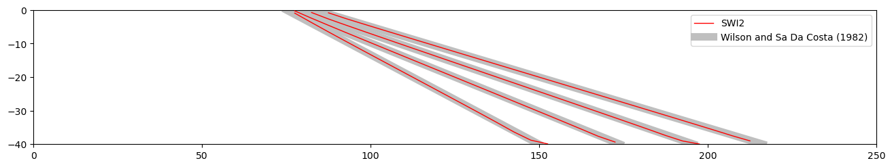
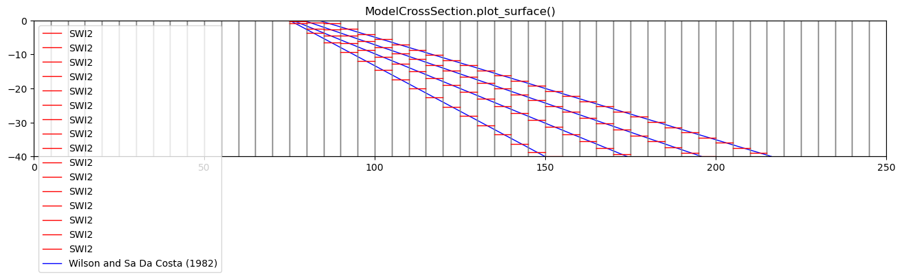
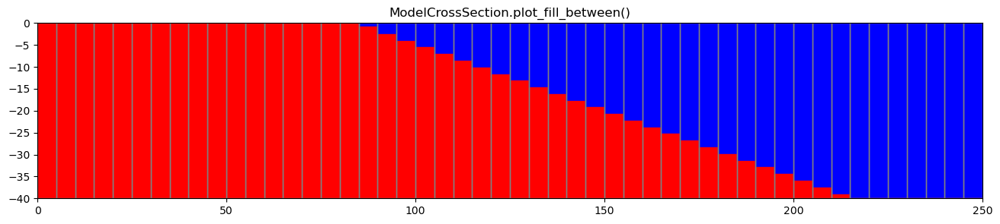

Note
SWI2 Example 1. Rotating Interface
This example problem is the first example problem in the SWI2 documentation (https://pubs.usgs.gov/tm/6a46/) and simulates transient movement of a freshwater:nbsphinx-math:`seawater `interface separating two density zones in a two-dimensional vertical plane. The problem domain is 250 m long, 40 m high, and 1 m wide. The aquifer is confined, storage changes are not considered (all MODFLOW stress periods are steady-state), and the top and bottom of the aquifer are horizontal and impermeable.
The domain is discretized into 50 columns, 1 row, and 1 layer, with respective cell dimensions of 5 m (DELR), 1 m (DELC), and 40 m. A constant head of 0 m is specified for column 50. The hydraulic conductivity is 2 m/d and the effective porosity (SSZ) is 0.2. A flow of 1 m\(^3\)/d of seawater is specified in column 1 and causes groundwater to flow from left to right in the model domain.
The domain contains one freshwater zone and one seawater zone, separated by an active ZETA surface between the zones (NSRF=1) that approximates the 50-percent seawater salinity contour. A 400-day period is simulated using a constant time step of 2 days. Fluid density is represented using the stratified option (ISTRAT=1) and the elevation of the interface is output every 100 days (every 50 time steps). The densities, \(\rho\), of the freshwater and saltwater are 1,000 and 1,025
kg/m\(^3\), respectively. Hence, the dimensionless densities, \(\nu\), of the freshwater and saltwater are 0.0 and 0.025, respectively. The maximum slope of the toe and tip is specified as 0.2 (TOESLOPE=TIPSLOPE=0.2), and default tip/toe parameters are used (ALPHA=BETA=0.1). Initially, the interface is at a 45\(^{\circ}\) angle from (x,z) = (80,0) to (x,z) = (120,-40). The source/sink terms (ISOURCE) are specified to be freshwater everywhere (ISOURCE=1) except in
cell 1 where saltwater enters the model and ISOURCE equals 2. A comparison of results for SWI2 and the exact Dupuit solution of Wilson and Sa Da Costa (1982) are presented below. The constant flow from left to right results in an average velocity of 0.125 m/d. The exact Dupuit solution is a rotating straight interface of which the center moves to the right with this velocity
Import numpy and matplotlib, set all figures to be inline, import flopy.modflow and flopy.utils.
[1]:
import os
import sys
from tempfile import TemporaryDirectory
import numpy as np
import matplotlib as mpl
import matplotlib.pyplot as plt
# run installed version of flopy or add local path
try:
import flopy
except:
fpth = os.path.abspath(os.path.join("..", ".."))
sys.path.append(fpth)
import flopy
print(sys.version)
print("numpy version: {}".format(np.__version__))
print("matplotlib version: {}".format(mpl.__version__))
print("flopy version: {}".format(flopy.__version__))
3.10.10 | packaged by conda-forge | (main, Mar 24 2023, 20:08:06) [GCC 11.3.0]
numpy version: 1.24.3
matplotlib version: 3.7.1
flopy version: 3.3.7
Define model name of your model and the location of MODFLOW executable. All MODFLOW files and output will be stored in the subdirectory defined by the workspace. Create a model named ml and specify that this is a MODFLOW-2005 model.
[2]:
modelname = "swiex1"
# Set name of MODFLOW exe
# assumes executable is in users path statement
exe_name = "mf2005"
temp_dir = TemporaryDirectory()
workspace = temp_dir.name
ml = flopy.modflow.Modflow(
modelname, version="mf2005", exe_name=exe_name, model_ws=workspace
)
Define the number of layers, rows and columns, and the cell size along the rows (delr) and along the columns (delc). Then create a discretization file. Specify the top and bottom of the aquifer. The heads are computed quasi-steady state (hence a steady MODFLOW run) while the interface will move. There is one stress period with a length of 400 days and 200 steps (so one step is 2 days).
[3]:
nlay = 1
nrow = 1
ncol = 50
delr = 5.0
delc = 1.0
nper, perlen, nstp = 1, 400.0, 200
discret = flopy.modflow.ModflowDis(
ml,
nlay=nlay,
nrow=nrow,
ncol=ncol,
delr=delr,
delc=delc,
top=0,
botm=-40.0,
steady=True,
nper=nper,
perlen=perlen,
nstp=nstp,
)
All cells are active (ibound=1), while the last cell is fixed head (ibound=-1). The starting values of the head are not important, as the heads are computed every time with a steady run.
[4]:
ibound = np.ones((nrow, ncol))
ibound[0, -1] = -1
bas = flopy.modflow.ModflowBas(ml, ibound=ibound, strt=0.0)
Define the hydraulic conductivity. The aquifer is confined (laytype=0) and the intercell hydraulic conductivity is the harmonic meand (layavg=0).
[5]:
lpf = flopy.modflow.ModflowLpf(ml, hk=2.0, laytyp=0, layavg=0)
Inflow on the right side of the model is 1 m\(^3\)/d (layer 0, row 0, column 0, discharge 1)
[6]:
wel = flopy.modflow.ModflowWel(ml, stress_period_data={0: [[0, 0, 0, 1]]})
Define the output control to save heads and interface every 50 steps, and define the pcg solver with default arguments.
[7]:
spd = {}
for istp in range(49, nstp + 1, 50):
spd[(0, istp)] = ["save head", "print budget"]
spd[(0, istp + 1)] = []
oc = flopy.modflow.ModflowOc(ml, stress_period_data=spd)
pcg = flopy.modflow.ModflowPcg(ml)
The intial interface is straight. The isource is one everywhere (inflow and outflow is fresh (zone 1)) except for the first cell (index=0) which has saltwater inflow (zone 2).
[8]:
z = np.zeros((nrow, ncol), float)
z[0, 16:24] = np.arange(-2.5, -40, -5)
z[0, 24:] = -40
z = [z] # zeta needs to be
isource = np.ones((nrow, ncol), int)
isource[0, 0] = 2
#
swi = flopy.modflow.ModflowSwi2(
ml,
nsrf=1,
istrat=1,
toeslope=0.2,
tipslope=0.2,
nu=[0, 0.025],
zeta=z,
ssz=0.2,
isource=isource,
nsolver=1,
iswizt=55,
)
Write the MODFLOW input files and run the model
[9]:
ml.write_input()
success, buff = ml.run_model(silent=True, report=True)
if success:
for line in buff:
print(line)
else:
raise ValueError("Failed to run.")
MODFLOW-2005
U.S. GEOLOGICAL SURVEY MODULAR FINITE-DIFFERENCE GROUND-WATER FLOW MODEL
Version 1.12.00 2/3/2017
Using NAME file: swiex1.nam
Run start date and time (yyyy/mm/dd hh:mm:ss): 2023/05/04 16:09:15
Solving: Stress period: 1 Time step: 1 Ground-Water Flow Eqn.
Solving: Stress period: 1 Time step: 2 Ground-Water Flow Eqn.
Solving: Stress period: 1 Time step: 3 Ground-Water Flow Eqn.
Solving: Stress period: 1 Time step: 4 Ground-Water Flow Eqn.
Solving: Stress period: 1 Time step: 5 Ground-Water Flow Eqn.
Solving: Stress period: 1 Time step: 6 Ground-Water Flow Eqn.
Solving: Stress period: 1 Time step: 7 Ground-Water Flow Eqn.
Solving: Stress period: 1 Time step: 8 Ground-Water Flow Eqn.
Solving: Stress period: 1 Time step: 9 Ground-Water Flow Eqn.
Solving: Stress period: 1 Time step: 10 Ground-Water Flow Eqn.
Solving: Stress period: 1 Time step: 11 Ground-Water Flow Eqn.
Solving: Stress period: 1 Time step: 12 Ground-Water Flow Eqn.
Solving: Stress period: 1 Time step: 13 Ground-Water Flow Eqn.
Solving: Stress period: 1 Time step: 14 Ground-Water Flow Eqn.
Solving: Stress period: 1 Time step: 15 Ground-Water Flow Eqn.
Solving: Stress period: 1 Time step: 16 Ground-Water Flow Eqn.
Solving: Stress period: 1 Time step: 17 Ground-Water Flow Eqn.
Solving: Stress period: 1 Time step: 18 Ground-Water Flow Eqn.
Solving: Stress period: 1 Time step: 19 Ground-Water Flow Eqn.
Solving: Stress period: 1 Time step: 20 Ground-Water Flow Eqn.
Solving: Stress period: 1 Time step: 21 Ground-Water Flow Eqn.
Solving: Stress period: 1 Time step: 22 Ground-Water Flow Eqn.
Solving: Stress period: 1 Time step: 23 Ground-Water Flow Eqn.
Solving: Stress period: 1 Time step: 24 Ground-Water Flow Eqn.
Solving: Stress period: 1 Time step: 25 Ground-Water Flow Eqn.
Solving: Stress period: 1 Time step: 26 Ground-Water Flow Eqn.
Solving: Stress period: 1 Time step: 27 Ground-Water Flow Eqn.
Solving: Stress period: 1 Time step: 28 Ground-Water Flow Eqn.
Solving: Stress period: 1 Time step: 29 Ground-Water Flow Eqn.
Solving: Stress period: 1 Time step: 30 Ground-Water Flow Eqn.
Solving: Stress period: 1 Time step: 31 Ground-Water Flow Eqn.
Solving: Stress period: 1 Time step: 32 Ground-Water Flow Eqn.
Solving: Stress period: 1 Time step: 33 Ground-Water Flow Eqn.
Solving: Stress period: 1 Time step: 34 Ground-Water Flow Eqn.
Solving: Stress period: 1 Time step: 35 Ground-Water Flow Eqn.
Solving: Stress period: 1 Time step: 36 Ground-Water Flow Eqn.
Solving: Stress period: 1 Time step: 37 Ground-Water Flow Eqn.
Solving: Stress period: 1 Time step: 38 Ground-Water Flow Eqn.
Solving: Stress period: 1 Time step: 39 Ground-Water Flow Eqn.
Solving: Stress period: 1 Time step: 40 Ground-Water Flow Eqn.
Solving: Stress period: 1 Time step: 41 Ground-Water Flow Eqn.
Solving: Stress period: 1 Time step: 42 Ground-Water Flow Eqn.
Solving: Stress period: 1 Time step: 43 Ground-Water Flow Eqn.
Solving: Stress period: 1 Time step: 44 Ground-Water Flow Eqn.
Solving: Stress period: 1 Time step: 45 Ground-Water Flow Eqn.
Solving: Stress period: 1 Time step: 46 Ground-Water Flow Eqn.
Solving: Stress period: 1 Time step: 47 Ground-Water Flow Eqn.
Solving: Stress period: 1 Time step: 48 Ground-Water Flow Eqn.
Solving: Stress period: 1 Time step: 49 Ground-Water Flow Eqn.
Solving: Stress period: 1 Time step: 50 Ground-Water Flow Eqn.
Solving: Stress period: 1 Time step: 51 Ground-Water Flow Eqn.
Solving: Stress period: 1 Time step: 52 Ground-Water Flow Eqn.
Solving: Stress period: 1 Time step: 53 Ground-Water Flow Eqn.
Solving: Stress period: 1 Time step: 54 Ground-Water Flow Eqn.
Solving: Stress period: 1 Time step: 55 Ground-Water Flow Eqn.
Solving: Stress period: 1 Time step: 56 Ground-Water Flow Eqn.
Solving: Stress period: 1 Time step: 57 Ground-Water Flow Eqn.
Solving: Stress period: 1 Time step: 58 Ground-Water Flow Eqn.
Solving: Stress period: 1 Time step: 59 Ground-Water Flow Eqn.
Solving: Stress period: 1 Time step: 60 Ground-Water Flow Eqn.
Solving: Stress period: 1 Time step: 61 Ground-Water Flow Eqn.
Solving: Stress period: 1 Time step: 62 Ground-Water Flow Eqn.
Solving: Stress period: 1 Time step: 63 Ground-Water Flow Eqn.
Solving: Stress period: 1 Time step: 64 Ground-Water Flow Eqn.
Solving: Stress period: 1 Time step: 65 Ground-Water Flow Eqn.
Solving: Stress period: 1 Time step: 66 Ground-Water Flow Eqn.
Solving: Stress period: 1 Time step: 67 Ground-Water Flow Eqn.
Solving: Stress period: 1 Time step: 68 Ground-Water Flow Eqn.
Solving: Stress period: 1 Time step: 69 Ground-Water Flow Eqn.
Solving: Stress period: 1 Time step: 70 Ground-Water Flow Eqn.
Solving: Stress period: 1 Time step: 71 Ground-Water Flow Eqn.
Solving: Stress period: 1 Time step: 72 Ground-Water Flow Eqn.
Solving: Stress period: 1 Time step: 73 Ground-Water Flow Eqn.
Solving: Stress period: 1 Time step: 74 Ground-Water Flow Eqn.
Solving: Stress period: 1 Time step: 75 Ground-Water Flow Eqn.
Solving: Stress period: 1 Time step: 76 Ground-Water Flow Eqn.
Solving: Stress period: 1 Time step: 77 Ground-Water Flow Eqn.
Solving: Stress period: 1 Time step: 78 Ground-Water Flow Eqn.
Solving: Stress period: 1 Time step: 79 Ground-Water Flow Eqn.
Solving: Stress period: 1 Time step: 80 Ground-Water Flow Eqn.
Solving: Stress period: 1 Time step: 81 Ground-Water Flow Eqn.
Solving: Stress period: 1 Time step: 82 Ground-Water Flow Eqn.
Solving: Stress period: 1 Time step: 83 Ground-Water Flow Eqn.
Solving: Stress period: 1 Time step: 84 Ground-Water Flow Eqn.
Solving: Stress period: 1 Time step: 85 Ground-Water Flow Eqn.
Solving: Stress period: 1 Time step: 86 Ground-Water Flow Eqn.
Solving: Stress period: 1 Time step: 87 Ground-Water Flow Eqn.
Solving: Stress period: 1 Time step: 88 Ground-Water Flow Eqn.
Solving: Stress period: 1 Time step: 89 Ground-Water Flow Eqn.
Solving: Stress period: 1 Time step: 90 Ground-Water Flow Eqn.
Solving: Stress period: 1 Time step: 91 Ground-Water Flow Eqn.
Solving: Stress period: 1 Time step: 92 Ground-Water Flow Eqn.
Solving: Stress period: 1 Time step: 93 Ground-Water Flow Eqn.
Solving: Stress period: 1 Time step: 94 Ground-Water Flow Eqn.
Solving: Stress period: 1 Time step: 95 Ground-Water Flow Eqn.
Solving: Stress period: 1 Time step: 96 Ground-Water Flow Eqn.
Solving: Stress period: 1 Time step: 97 Ground-Water Flow Eqn.
Solving: Stress period: 1 Time step: 98 Ground-Water Flow Eqn.
Solving: Stress period: 1 Time step: 99 Ground-Water Flow Eqn.
Solving: Stress period: 1 Time step: 100 Ground-Water Flow Eqn.
Solving: Stress period: 1 Time step: 101 Ground-Water Flow Eqn.
Solving: Stress period: 1 Time step: 102 Ground-Water Flow Eqn.
Solving: Stress period: 1 Time step: 103 Ground-Water Flow Eqn.
Solving: Stress period: 1 Time step: 104 Ground-Water Flow Eqn.
Solving: Stress period: 1 Time step: 105 Ground-Water Flow Eqn.
Solving: Stress period: 1 Time step: 106 Ground-Water Flow Eqn.
Solving: Stress period: 1 Time step: 107 Ground-Water Flow Eqn.
Solving: Stress period: 1 Time step: 108 Ground-Water Flow Eqn.
Solving: Stress period: 1 Time step: 109 Ground-Water Flow Eqn.
Solving: Stress period: 1 Time step: 110 Ground-Water Flow Eqn.
Solving: Stress period: 1 Time step: 111 Ground-Water Flow Eqn.
Solving: Stress period: 1 Time step: 112 Ground-Water Flow Eqn.
Solving: Stress period: 1 Time step: 113 Ground-Water Flow Eqn.
Solving: Stress period: 1 Time step: 114 Ground-Water Flow Eqn.
Solving: Stress period: 1 Time step: 115 Ground-Water Flow Eqn.
Solving: Stress period: 1 Time step: 116 Ground-Water Flow Eqn.
Solving: Stress period: 1 Time step: 117 Ground-Water Flow Eqn.
Solving: Stress period: 1 Time step: 118 Ground-Water Flow Eqn.
Solving: Stress period: 1 Time step: 119 Ground-Water Flow Eqn.
Solving: Stress period: 1 Time step: 120 Ground-Water Flow Eqn.
Solving: Stress period: 1 Time step: 121 Ground-Water Flow Eqn.
Solving: Stress period: 1 Time step: 122 Ground-Water Flow Eqn.
Solving: Stress period: 1 Time step: 123 Ground-Water Flow Eqn.
Solving: Stress period: 1 Time step: 124 Ground-Water Flow Eqn.
Solving: Stress period: 1 Time step: 125 Ground-Water Flow Eqn.
Solving: Stress period: 1 Time step: 126 Ground-Water Flow Eqn.
Solving: Stress period: 1 Time step: 127 Ground-Water Flow Eqn.
Solving: Stress period: 1 Time step: 128 Ground-Water Flow Eqn.
Solving: Stress period: 1 Time step: 129 Ground-Water Flow Eqn.
Solving: Stress period: 1 Time step: 130 Ground-Water Flow Eqn.
Solving: Stress period: 1 Time step: 131 Ground-Water Flow Eqn.
Solving: Stress period: 1 Time step: 132 Ground-Water Flow Eqn.
Solving: Stress period: 1 Time step: 133 Ground-Water Flow Eqn.
Solving: Stress period: 1 Time step: 134 Ground-Water Flow Eqn.
Solving: Stress period: 1 Time step: 135 Ground-Water Flow Eqn.
Solving: Stress period: 1 Time step: 136 Ground-Water Flow Eqn.
Solving: Stress period: 1 Time step: 137 Ground-Water Flow Eqn.
Solving: Stress period: 1 Time step: 138 Ground-Water Flow Eqn.
Solving: Stress period: 1 Time step: 139 Ground-Water Flow Eqn.
Solving: Stress period: 1 Time step: 140 Ground-Water Flow Eqn.
Solving: Stress period: 1 Time step: 141 Ground-Water Flow Eqn.
Solving: Stress period: 1 Time step: 142 Ground-Water Flow Eqn.
Solving: Stress period: 1 Time step: 143 Ground-Water Flow Eqn.
Solving: Stress period: 1 Time step: 144 Ground-Water Flow Eqn.
Solving: Stress period: 1 Time step: 145 Ground-Water Flow Eqn.
Solving: Stress period: 1 Time step: 146 Ground-Water Flow Eqn.
Solving: Stress period: 1 Time step: 147 Ground-Water Flow Eqn.
Solving: Stress period: 1 Time step: 148 Ground-Water Flow Eqn.
Solving: Stress period: 1 Time step: 149 Ground-Water Flow Eqn.
Solving: Stress period: 1 Time step: 150 Ground-Water Flow Eqn.
Solving: Stress period: 1 Time step: 151 Ground-Water Flow Eqn.
Solving: Stress period: 1 Time step: 152 Ground-Water Flow Eqn.
Solving: Stress period: 1 Time step: 153 Ground-Water Flow Eqn.
Solving: Stress period: 1 Time step: 154 Ground-Water Flow Eqn.
Solving: Stress period: 1 Time step: 155 Ground-Water Flow Eqn.
Solving: Stress period: 1 Time step: 156 Ground-Water Flow Eqn.
Solving: Stress period: 1 Time step: 157 Ground-Water Flow Eqn.
Solving: Stress period: 1 Time step: 158 Ground-Water Flow Eqn.
Solving: Stress period: 1 Time step: 159 Ground-Water Flow Eqn.
Solving: Stress period: 1 Time step: 160 Ground-Water Flow Eqn.
Solving: Stress period: 1 Time step: 161 Ground-Water Flow Eqn.
Solving: Stress period: 1 Time step: 162 Ground-Water Flow Eqn.
Solving: Stress period: 1 Time step: 163 Ground-Water Flow Eqn.
Solving: Stress period: 1 Time step: 164 Ground-Water Flow Eqn.
Solving: Stress period: 1 Time step: 165 Ground-Water Flow Eqn.
Solving: Stress period: 1 Time step: 166 Ground-Water Flow Eqn.
Solving: Stress period: 1 Time step: 167 Ground-Water Flow Eqn.
Solving: Stress period: 1 Time step: 168 Ground-Water Flow Eqn.
Solving: Stress period: 1 Time step: 169 Ground-Water Flow Eqn.
Solving: Stress period: 1 Time step: 170 Ground-Water Flow Eqn.
Solving: Stress period: 1 Time step: 171 Ground-Water Flow Eqn.
Solving: Stress period: 1 Time step: 172 Ground-Water Flow Eqn.
Solving: Stress period: 1 Time step: 173 Ground-Water Flow Eqn.
Solving: Stress period: 1 Time step: 174 Ground-Water Flow Eqn.
Solving: Stress period: 1 Time step: 175 Ground-Water Flow Eqn.
Solving: Stress period: 1 Time step: 176 Ground-Water Flow Eqn.
Solving: Stress period: 1 Time step: 177 Ground-Water Flow Eqn.
Solving: Stress period: 1 Time step: 178 Ground-Water Flow Eqn.
Solving: Stress period: 1 Time step: 179 Ground-Water Flow Eqn.
Solving: Stress period: 1 Time step: 180 Ground-Water Flow Eqn.
Solving: Stress period: 1 Time step: 181 Ground-Water Flow Eqn.
Solving: Stress period: 1 Time step: 182 Ground-Water Flow Eqn.
Solving: Stress period: 1 Time step: 183 Ground-Water Flow Eqn.
Solving: Stress period: 1 Time step: 184 Ground-Water Flow Eqn.
Solving: Stress period: 1 Time step: 185 Ground-Water Flow Eqn.
Solving: Stress period: 1 Time step: 186 Ground-Water Flow Eqn.
Solving: Stress period: 1 Time step: 187 Ground-Water Flow Eqn.
Solving: Stress period: 1 Time step: 188 Ground-Water Flow Eqn.
Solving: Stress period: 1 Time step: 189 Ground-Water Flow Eqn.
Solving: Stress period: 1 Time step: 190 Ground-Water Flow Eqn.
Solving: Stress period: 1 Time step: 191 Ground-Water Flow Eqn.
Solving: Stress period: 1 Time step: 192 Ground-Water Flow Eqn.
Solving: Stress period: 1 Time step: 193 Ground-Water Flow Eqn.
Solving: Stress period: 1 Time step: 194 Ground-Water Flow Eqn.
Solving: Stress period: 1 Time step: 195 Ground-Water Flow Eqn.
Solving: Stress period: 1 Time step: 196 Ground-Water Flow Eqn.
Solving: Stress period: 1 Time step: 197 Ground-Water Flow Eqn.
Solving: Stress period: 1 Time step: 198 Ground-Water Flow Eqn.
Solving: Stress period: 1 Time step: 199 Ground-Water Flow Eqn.
Solving: Stress period: 1 Time step: 200 Ground-Water Flow Eqn.
Run end date and time (yyyy/mm/dd hh:mm:ss): 2023/05/04 16:09:15
Elapsed run time: 0.016 Seconds
Normal termination of simulation
Load the head and zeta data from the file
[10]:
# read model heads
hfile = flopy.utils.HeadFile(os.path.join(ml.model_ws, modelname + ".hds"))
head = hfile.get_alldata()
# read model zeta
zfile = flopy.utils.CellBudgetFile(
os.path.join(ml.model_ws, modelname + ".zta")
)
kstpkper = zfile.get_kstpkper()
zeta = []
for kk in kstpkper:
zeta.append(zfile.get_data(kstpkper=kk, text="ZETASRF 1")[0])
zeta = np.array(zeta)
Make a graph and add the solution of Wilson and Sa da Costa
[11]:
plt.figure(figsize=(16, 6))
# define x-values of xcells and plot interface
x = np.arange(0, ncol * delr, delr) + delr / 2.0
label = [
"SWI2",
"_",
"_",
"_",
] # labels with an underscore are not added to legend
for i in range(4):
zt = np.ma.masked_outside(zeta[i, 0, 0, :], -39.99999, -0.00001)
plt.plot(x, zt, "r-", lw=1, zorder=10, label=label[i])
# Data for the Wilson - Sa da Costa solution
k = 2.0
n = 0.2
nu = 0.025
H = 40.0
tzero = H * n / (k * nu) / 4.0
Ltoe = np.zeros(4)
v = 0.125
t = np.arange(100, 500, 100)
label = [
"Wilson and Sa Da Costa (1982)",
"_",
"_",
"_",
] # labels with an underscore are not added to legend
for i in range(4):
Ltoe[i] = H * np.sqrt(k * nu * (t[i] + tzero) / n / H)
plt.plot(
[100 - Ltoe[i] + v * t[i], 100 + Ltoe[i] + v * t[i]],
[0, -40],
"0.75",
lw=8,
zorder=0,
label=label[i],
)
# Scale figure and add legend
plt.axis("scaled")
plt.xlim(0, 250)
plt.ylim(-40, 0)
plt.legend(loc="best");

Use ModelCrossSection plotting class and plot_surface() method to plot zeta surfaces.
[12]:
fig = plt.figure(figsize=(16, 3))
ax = fig.add_subplot(1, 1, 1)
modelxsect = flopy.plot.PlotCrossSection(model=ml, line={"Row": 0})
label = ["SWI2", "_", "_", "_"]
for k in range(zeta.shape[0]):
modelxsect.plot_surface(
zeta[k, :, :, :],
masked_values=[0, -40.0],
color="red",
lw=1,
label=label[k],
)
linecollection = modelxsect.plot_grid()
ax.set_title("ModelCrossSection.plot_surface()")
# Data for the Wilson - Sa da Costa solution
k = 2.0
n = 0.2
nu = 0.025
H = 40.0
tzero = H * n / (k * nu) / 4.0
Ltoe = np.zeros(4)
v = 0.125
t = np.arange(100, 500, 100)
label = [
"Wilson and Sa Da Costa (1982)",
"_",
"_",
"_",
] # labels with an underscore are not added to legend
for i in range(4):
Ltoe[i] = H * np.sqrt(k * nu * (t[i] + tzero) / n / H)
ax.plot(
[100 - Ltoe[i] + v * t[i], 100 + Ltoe[i] + v * t[i]],
[0, -40],
"blue",
lw=1,
zorder=0,
label=label[i],
)
# Scale figure and add legend
ax.axis("scaled")
ax.set_xlim(0, 250)
ax.set_ylim(-40, 0)
ax.legend(loc="best");

Use ModelCrossSection plotting class and plot_fill_between() method to fill between zeta surfaces.
[13]:
fig = plt.figure(figsize=(16, 3))
ax = fig.add_subplot(1, 1, 1)
modelxsect = flopy.plot.PlotCrossSection(model=ml, line={"Row": 0})
modelxsect.plot_fill_between(zeta[3, :, :, :])
linecollection = modelxsect.plot_grid()
ax.set_title("ModelCrossSection.plot_fill_between()");

Convert zeta surfaces to relative seawater concentrations
[14]:
X, Y = np.meshgrid(x, [0, -40])
zc = flopy.plot.SwiConcentration(model=ml)
conc = zc.calc_conc(zeta={0: zeta[3, :, :, :]}) / 0.025
print(conc[0, 0, :])
v = np.vstack((conc[0, 0, :], conc[0, 0, :]))
plt.imshow(v, extent=[0, 250, -40, 0], cmap="Reds")
cb = plt.colorbar(orientation="horizontal")
cb.set_label("percent seawater")
plt.contour(X, Y, v, [0.25, 0.5, 0.75], linewidths=[2, 1.5, 1], colors="black");
[1.00000001 1.00000001 1.00000001 1.00000001 1.00000001 1.00000001
1.00000001 1.00000001 1.00000001 1.00000001 1.00000001 1.00000001
1.00000001 1.00000001 1.00000001 1.00000001 1.00000001 0.97957368
0.93777831 0.89900599 0.8606122 0.82240776 0.78431243 0.74628681
0.70830902 0.6703652 0.63244558 0.59454289 0.55665098 0.5187645
0.4808785 0.44298783 0.40508729 0.36717053 0.32923027 0.29125705
0.25323816 0.21515508 0.17697897 0.13865538 0.10004826 0.06099987
0.02483263 0. 0. 0. 0. 0.
0. 0. ]

[15]:
try:
# ignore PermissionError on Windows
temp_dir.cleanup()
except:
pass